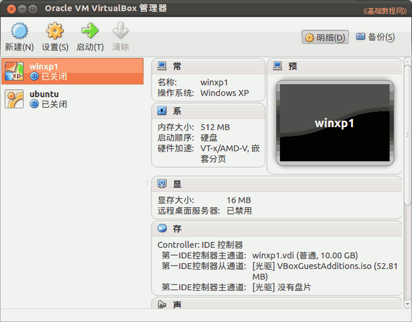

2011-2012 第二学期九年级系统安装教学设计
作者：TeliuTe 来源：基础教程网
三、计算机硬件 返回目录 下一课
（一）教学设计
1、学习目标：创建一个虚拟机
2、注意事项：把下一节的内容先预告一下
3、教学过程：
1）教师准备学案和板书；
2）学生整队进入，开机抄黑板上笔记；
3）教师讲解板书演示操作；
4）学生打指法、日志、完成操作；
5）教师打勾记录学生指法成绩，检查日志和操作；
注：学生抄完笔记就开始打指法、日志，老师讲完后再继续完成；
（二）板书设计(学生笔记)
第3课 计算机硬件
1.点“主按钮”，更多，显示“ oracle"
2. 点“新建—下一步－名称 winxp －内存(512M)－硬盘(下一步)
3.点“设置－storage－choose文件系统- opt－winxp.iso
4、确定－开始
操作图示：

（三）课后记 2012-03-09 17:29
--
分成三步走，每一步停下操作完再下一步
先加图标打开，再新建虚拟电脑
--
再添加光驱启动到系统选择界面
出现提示可以打勾去掉，3班时间紧没讲这一条
--
注意点进去，要不会从本地硬盘启动
下节设置启动顺序，光盘和硬盘
--
注意看清楚再点，出现点到添加虚拟硬盘的，
点第一个绿加号，有个光盘的图标
--
3班好多密码忘了的，上周的课被占了
关机图标也没建好，还得补上
--
有几个带手机卡的，自己看图片电影
看发展趋势，将来学生自己可以有移动硬盘
--
会装系统的话，自己可以用自己的系统
接手机卡的时候，用原装的线，别的只显示充电状态
返回目录 下一课
本教程由86团学校TeliuTe制作|著作权所有
基础教程网：http://teliute.org/
美丽的校园……
转载和引用本站内容，请保留版权信息和本站链接。